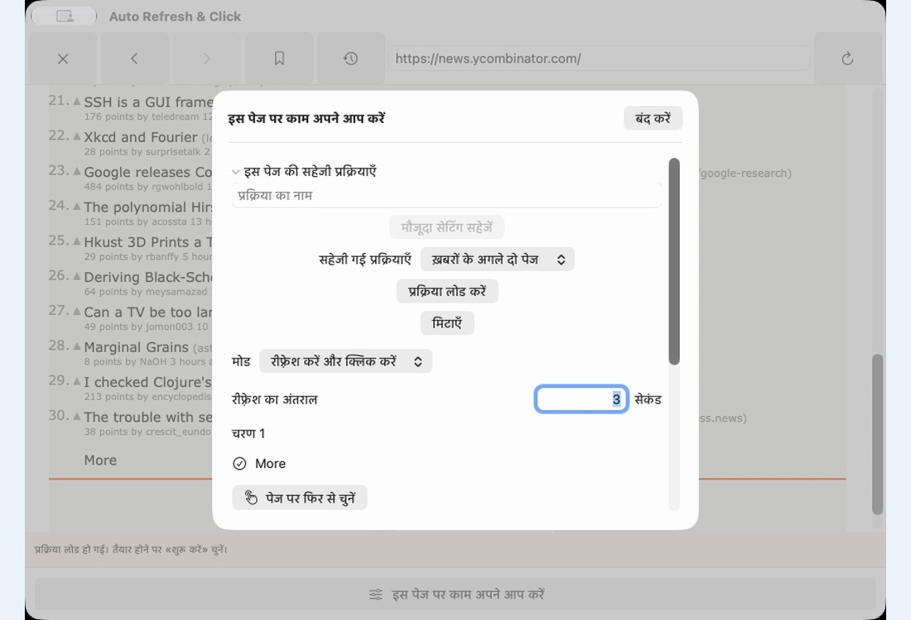

iPhone / iPad
iOS या iPadOS 15.4 या नया संस्करण चाहिए। सेटिंग में ऐप्स → Safari → एक्सटेंशन खोलें। पुराने सिस्टम पर सेटिंग → Safari → एक्सटेंशन खोलें। Auto Refresh & Clicker चालू करें और ज़रूरी साइटों की अनुमति दें।
Auto Refresh & Clicker
अपना रोज़ का पेज खोलें, जैसे फ़िल्टर की गई ऑर्डर सूची। होम स्क्रीन पर «ऐप में वेबसाइट खोलें» चुनें या Safari में पहले से खुले पेज पर एक्सटेंशन खोलें।

बटन या लिंक चुनें या उसका नाम डालें। बदलते हिस्से के लिए * वाइल्डकार्ड इस्तेमाल करें। अगर कई बटन मेल खाते हैं, तो पैटर्न अधिक सटीक बनाएँ। *_AVS_*
iOS या iPadOS 15.4 या नया संस्करण चाहिए। सेटिंग में ऐप्स → Safari → एक्सटेंशन खोलें। पुराने सिस्टम पर सेटिंग → Safari → एक्सटेंशन खोलें। Auto Refresh & Clicker चालू करें और ज़रूरी साइटों की अनुमति दें।
macOS 12 और Safari 15.4 या नए संस्करण चाहिए। इंस्टॉल किया गया ऐप खोलें, «Safari की सेटिंग खोलें» चुनें और एक्सटेंशन चालू करें। फिर कोई पेज खोलकर Safari टूलबार में एक्सटेंशन का आइकन चुनें।
Chrome Web Store से इंस्टॉल करें। Chrome का एक्सटेंशन मेन्यू खोलें, चाहें तो एक्सटेंशन पिन करें और जिस पेज पर काम करना है वहाँ इसे खोलें।
ऐसे डैशबोर्ड या स्टेटस पेज के लिए जिसे पूरा रीफ़्रेश करना हो। पहले 10 सेकंड का अंतराल आज़माएँ।
जब किसी बटन या लिंक पर क्लिक करने से पहले पेज फिर लोड करना हो, तब यह मोड इस्तेमाल करें।
जब सूची का अपना रीफ़्रेश आइकन हो और पूरा पेज लोड करने से फ़िल्टर रीसेट हो जाएँ।
इंस्टॉल किया गया ऐप एक बार खोलें और फिर Safari की सेटिंग → एक्सटेंशन देखें। macOS 12 और Safari 15.4 या नए संस्करण चाहिए। फिर भी समस्या रहे, तो अपने संस्करण और इंस्टॉल का स्रोत बताएँ।
कोई HTTP या HTTPS पेज खोलें और Safari की सेटिंग में साइट की अनुमति दें। नए टैब, ब्राउज़र की सेटिंग और कुछ सुरक्षित पेजों पर काम नहीं चल सकता। एक्सटेंशन में दिखा संदेश पढ़ें।
बटन दिखाई देना चाहिए और सक्रिय होना चाहिए। पेज से सही बटन चुनें या ऐसा नाम या वाइल्डकार्ड डालें जो सिर्फ़ उसी से मेल खाए।
धनात्मक पूरे सेकंड डालें और हर चरण पूरा करें। चलते काम में बदलाव करने पर «बदलाव लागू करें» चुनें।
Safari आगे रखें और स्क्रीन अनलॉक रखें। iOS और iPadOS बैकग्राउंड में या लॉक स्क्रीन पर ब्राउज़र का काम रोक सकते हैं।
अपना डिवाइस, सिस्टम और ब्राउज़र संस्करण, ऐप का संस्करण, काम का मोड और पूरा त्रुटि संदेश बताएँ। निजी साइट का पता या गोपनीय जानकारी भेजने की ज़रूरत नहीं। बटन और दिखाई देने वाली समस्या बता दें।
सहायता से संपर्क करें